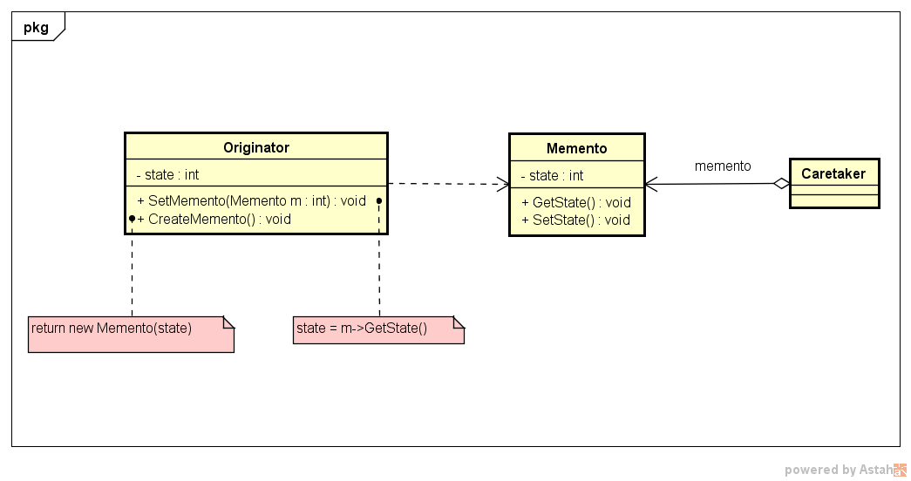

18 - Memento
Descrição do Padrão:
A intenção deste padrão é capturar e externalizar um estado interno de um objeto, sem violar o encapsulamento, de maneira que o objeto possa ser restaurado para esse estado mais tarde.
Descrição da UML:
- - O UML a seguir ilustra como o Memento funciona. Um memento (recordação) é um objeto que armazena um instantâneo do estado interno de outro objeto - o originador do memento. O mecanismo de desfazer solicitará um memento do originador, quando ele necessita fazer um checkpoint do estado do originador. O originador inicia o memento com informações que caracterizam o seu estado corrente. Somente o originador pode armazenar e recuperar informação do memento - o memento é "opaco" para outros objetos.
UML do Padrão:
Descrição do exemplo do livro:
O exemplo do livro é sobre um jogo que não tem a função "salvar progresso" e os jogadores estão pedindo essa função para que todos os seus esforços não tenham sido em vão quando o seu personagem é eliminado. O Memento tem como objetivo:
- Salvar o estado do objeto-chave do sistema;
- Manter o encapsulamento desse objeto-chave;